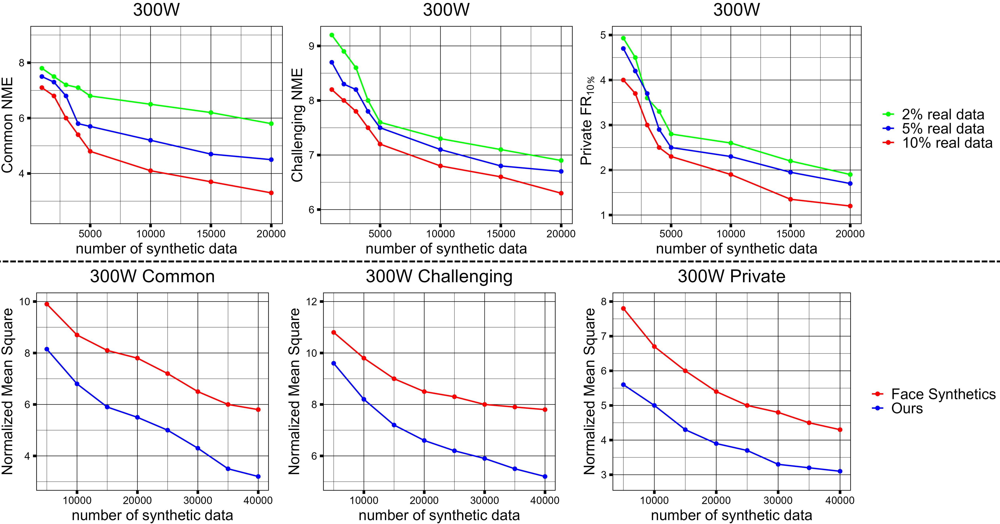
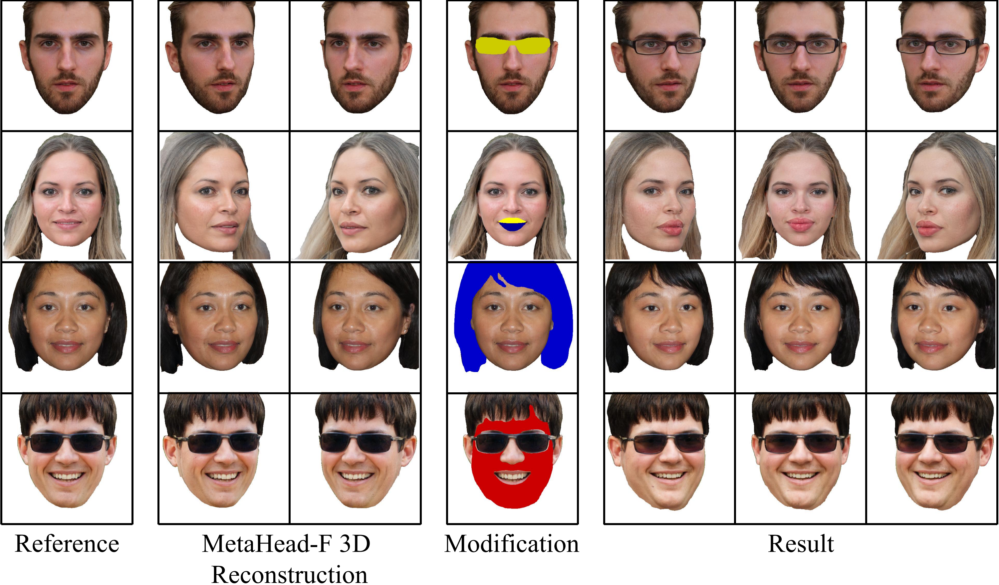
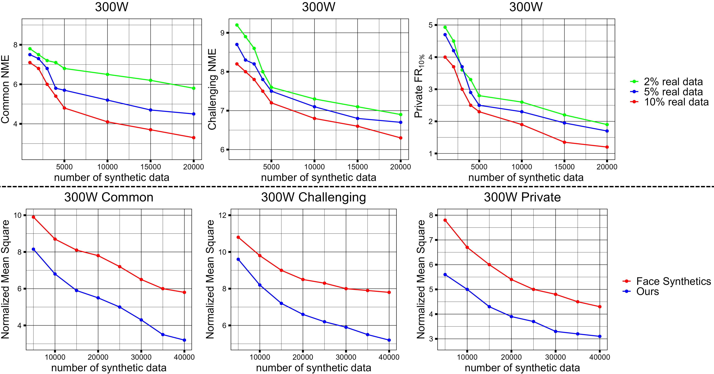
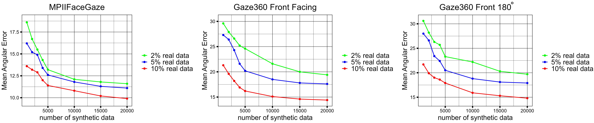
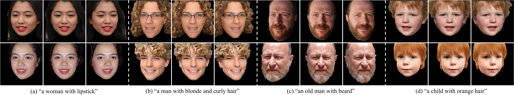
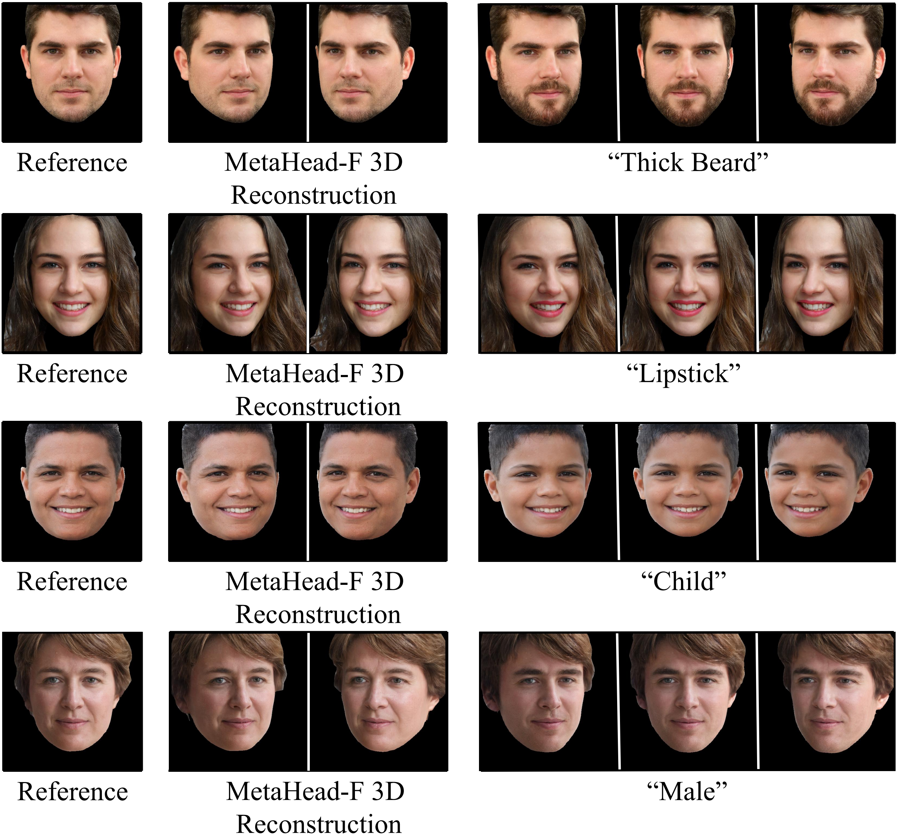

Synthesizing Landmark Labeled Training Data
Our synthesized heads help label estimation with small amount of real data, and surpasses state-of-the-art landmark-labeled image generation method [45] on head synthesis.
Collecting and labeling training data is one important step for learning-based methods because the process is time-consuming and biased. For face analysis tasks, although some generative models can be used to generate face data, they can only achieve a subset of generation diversity, reconstruction accuracy, 3D consistency, high-fidelity visual quality, and easy editability. One recent related work is the graphics-based generative method, but it can only render low realism head with high computation cost. In this paper, we propose MetaHead, a unified and full-featured controllable digital head engine, which consists of a controllable head radiance field(MetaHead-F) to super-realistically generate or reconstruct view-consistent 3D controllable digital heads and a generic top-down image generation framework LabelHead to generate digital heads consistent with the given customizable feature labels. Experiments validate that our controllable digital head engine achieves the state-of-theart generation visual quality and reconstruction accuracy. Moreover, the generated labeled data can assist real training data and significantly surpass the labeled data generated by graphics-based methods in terms of training effect.
Overview of digital head engine MetaHead. It consists of a controllable head radiance field (MetaHead-F) to super-realistically reconstruct or generate view-consistent 3D controllable digital heads and a generic top-down image generation framework LabelHead to generate heads consistent with the given customizable feature labels. Furthermore, it can also bottom-up estimate the labels of head features bidirectionally.
MetaHead-F provides precise and view-consistent 3D control over the shape and appearance of heads in a highly decoupled manner, including challenging expressions and illumination. In comparison, previous models could only output or control moderate expressions. It can also generate heads in a 3D-aware stylization manner.
Super-resolution module and our proposed hierarchical structure attention module solve the chronic dynamic-scene problem of hair, teeth and beard flickering when the viewing angle changes.
Top: state-of-the-art head models often experience texture flickering when used in dynamic scenes, which sets them apart from real human heads. Bottom: video sequences comparing the super-resolution output (left half of each scene) to the neural volume rendering (right half of each scene).
Zero-shot self-retargeting results demonstrate MetaHead-F's precise reconstruction of input human heads, 3D view consistency, and decoupling of pose control.
We present qualitative results on single-image reconstruction and attribute control accuracy, comparing our method against four state-of-the-art head synthesis or reconstruction-only methods. In each sub-figure, column 3 displays the reconstruction results, while columns 2 and 4 show the results obtained by controlling the camera poses of the reconstructions.
We present qualitative results on the expression control, comparing our method against the state-of-the-art controllable head synthesis method GAN-Control. For each sub-figure, column 1 shows a reference image, columns 2 to 7 show images generated with random expression control. MetaHead-F allows for diverse expression variations, including frowning, pouting, curling lips, smirking, and more.
We show ablation experiments on SemanticField, super-resolution module and our proposed conditional supervision head signals. Studies show that SemanticField precisely control the hair and mouth shape, our proposed identity and expression conditional prior signal enhance the control over fine-grained geometric details(identity and expression), and super-resolution module significantly improves the output visual quality.
The feature design space of MetaHead-F has many customizable options in addition to identity, illumination and texture. We present examples of adding other features to the feature design space, which verifies that LabelHead allows MetaHead-F to precisely control more attributes such as gaze and hair color in addition to the common attributes in a disentanglement manner, which cannot be achieved by existing models.
we also present synthesizing heads with consistent semantic labels and the interactive local control over head shape using semantic labels.
Methods for head label estimation such as landmark and gaze have not yet reached a satisfactory level of performance. This is primarily due to the lack of sufficiently large and diverse labeled training data for the task. Collecting precise and highly varied head labeled data with ground truth, particularly outside of the lab, is a challenging task. In the main manuscript, due to the limited space, we discuss landmark feature in detail. We show 2D landmark labels in (a) row 1-2, 3D landmark labels in (a) row 3 and (b). (a) shows that LabelHead could generate super-realistic heads under challenging scenes and diverse shape and appearance variation with accurate labels. (b) shows that MetaHead-F could synthesize stylized heads with equally accuracy.

Our synthesized heads help label estimation with small amount of real data, and surpasses state-of-the-art landmark-labeled image generation method [45] on head synthesis.
Our synthesized heads help label estimation with small amount of real data on popular gaze benchmarks.
A natural way to customize 3D heads is to use language guidance. However, discovering semantically meaningful latent manipulations typically involves painstaking human examination of the many degrees of freedom. We explore leveraging the power of Contrastive Language-Image Pre-training (CLIP) models in order to develop a text-based interface for MetaHead-F head generation and manipulation that does not require such manual effort. As shown in the figure, one can finely customize the super-realistic 3D heads using text descriptions.
We can further semantically 3D edit generated heads using text prompts through solving the optimization problem of minimize the cosine distance between the CLIP embeddings of its text and image inputs. As shown in the figure, we can achieve a wide variety of disentangled and meaningful control faithful to the text prompt.
